CINEOSIS LAB · MARKOV FOUND
THE REPUBLIC
Seventeen Republics from the writers' room, each cut as a short film from the archive: a narrator tells the story; the characters are figures cut from archival films, each introduced where the archive found it; the archive speaks as the Republic's citizens; the score is D-A-E · Honed for Film, chosen by what each scene says. Also: the four versions · the multiplane · the screenplay.
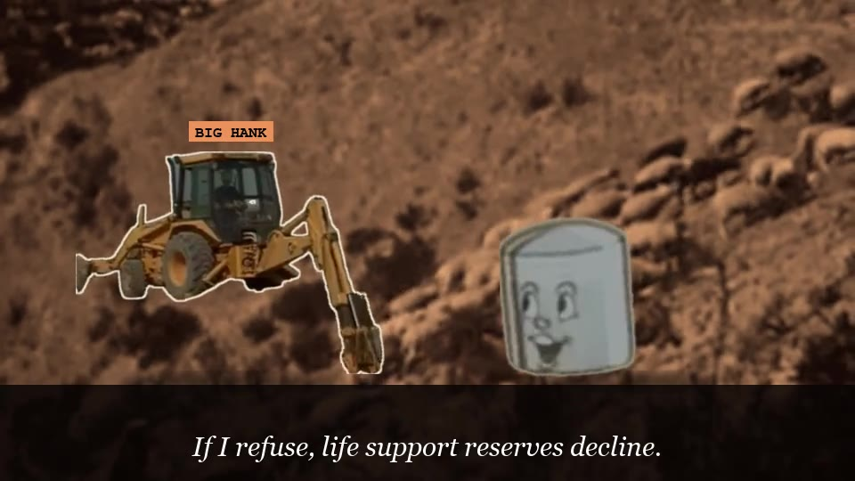
01 · 3.2 MINTHE ERGON OF BIG HANKRED DUST & REASON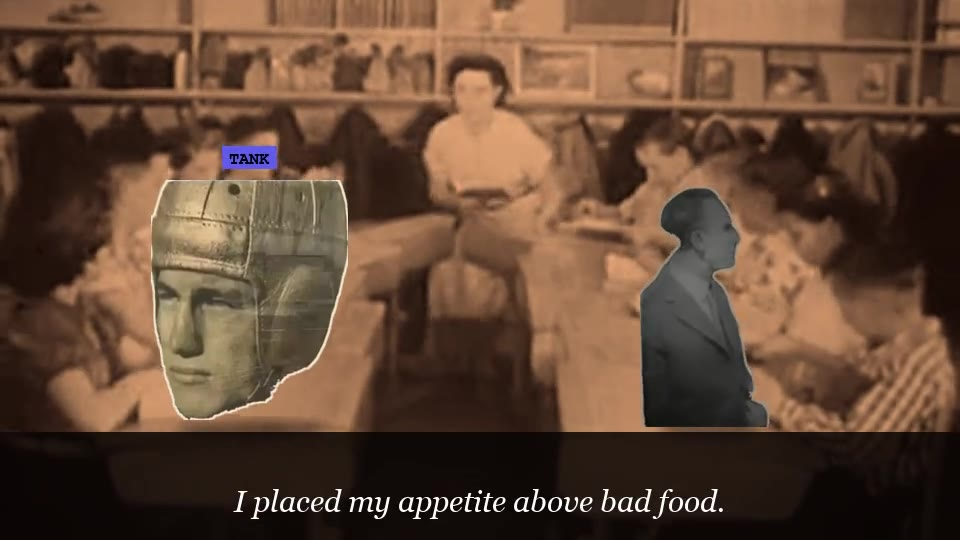
02 · 3.2 MINTHE SANDWICH OF THE SOULGRIDIRON OF THE GODS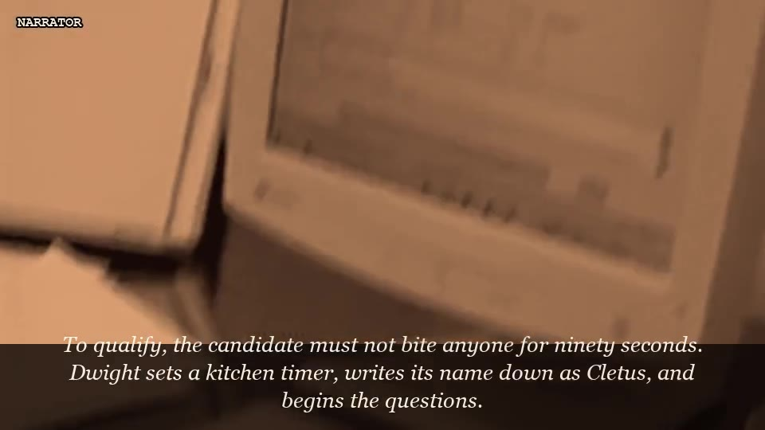
03 · 3.2 MINOPEN ENROLLMENT (FOR THE UNDEAD)THE LAST BRANCH OFFICE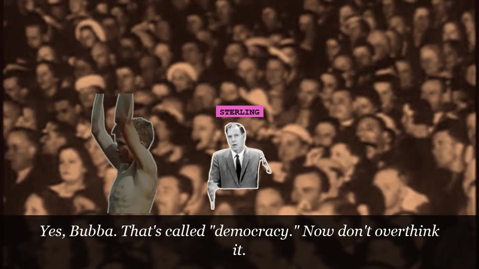
04 · 3.0 MINCATEGORY IS... NOBLE LIECATEGORY IS... NOBLE LIE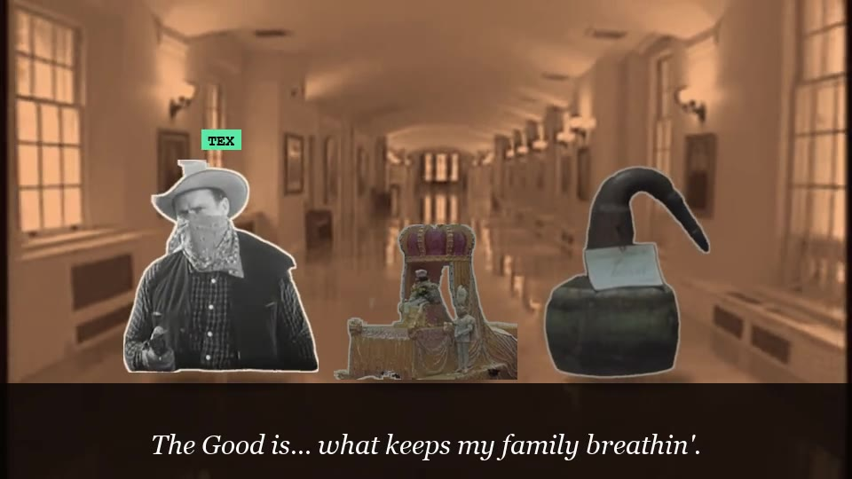
05 · 2.9 MINTHE DIALECTIC KEY & THE GUN CALLED PRAGMATISMFORMS OF BLOOD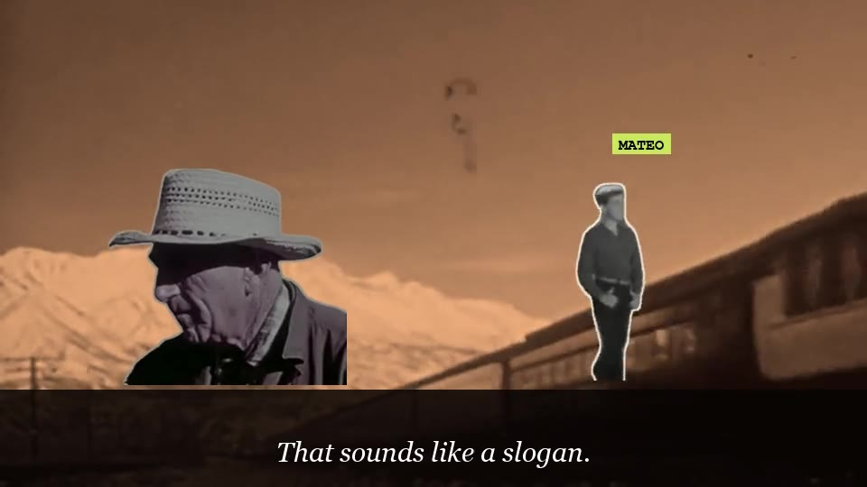
06 · 2.9 MINEACH PART, ITS FUNCTIONBLOOD AND BRISKET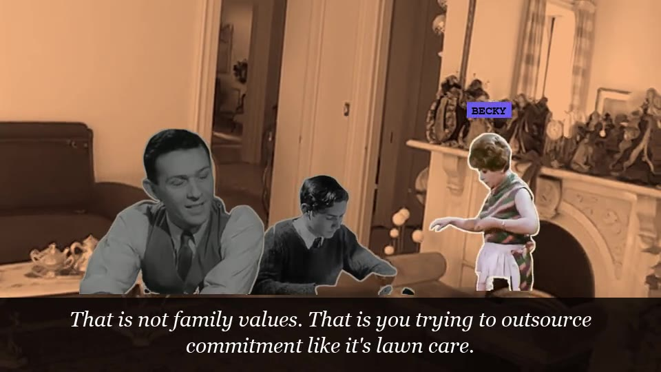
07 · 2.7 MINTRADITIONAL VALUES (COMMUNAL EDITION)08 · 2.9 MINTHE THUMOO-S TEST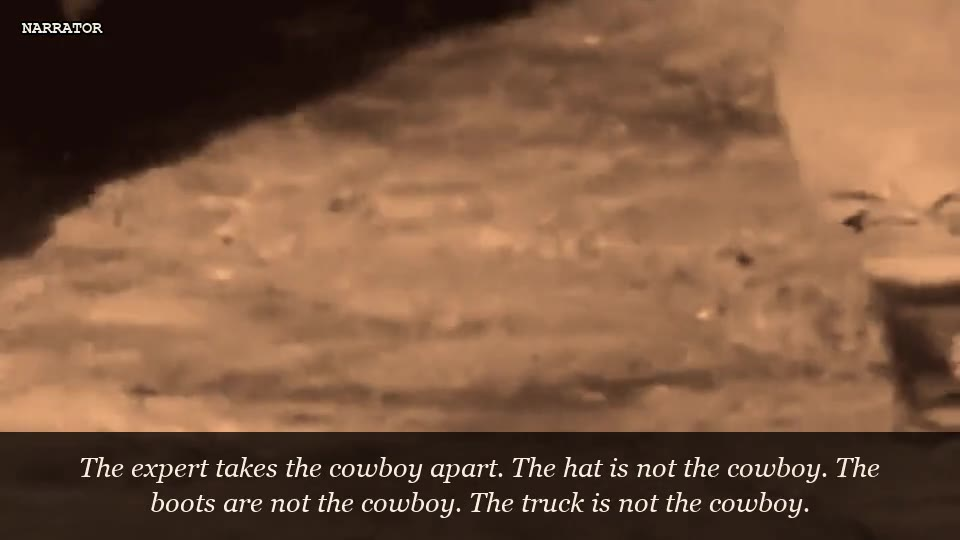
09 · 3.0 MINTHE GREAT DEBATE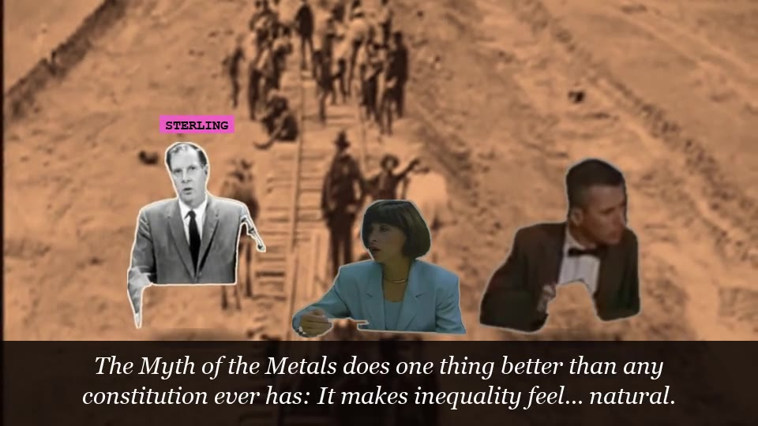
10 · 3.4 MINTHE METALS MEETING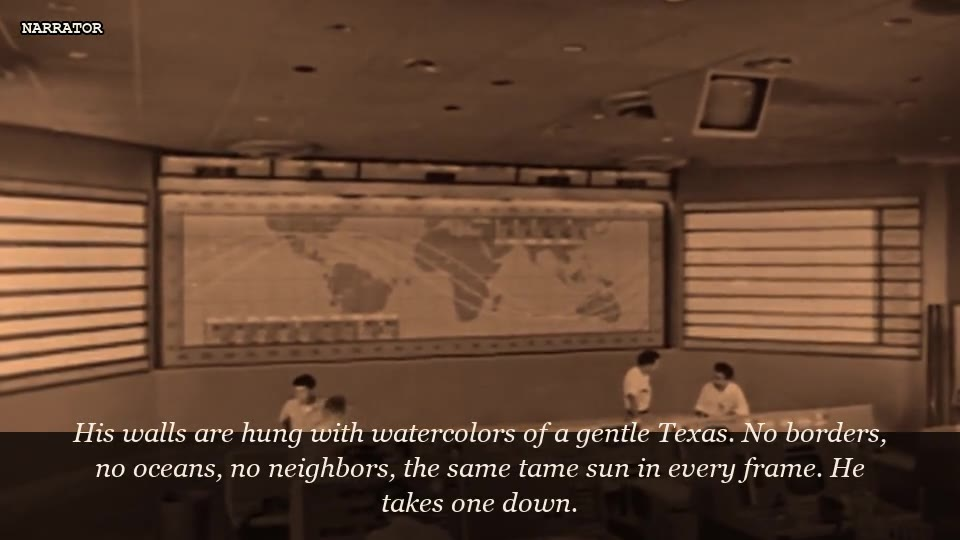
11 · 3.6 MINTHE WATERCOLOR FRONTIERA SYMMETRICAL SOVEREIGNTY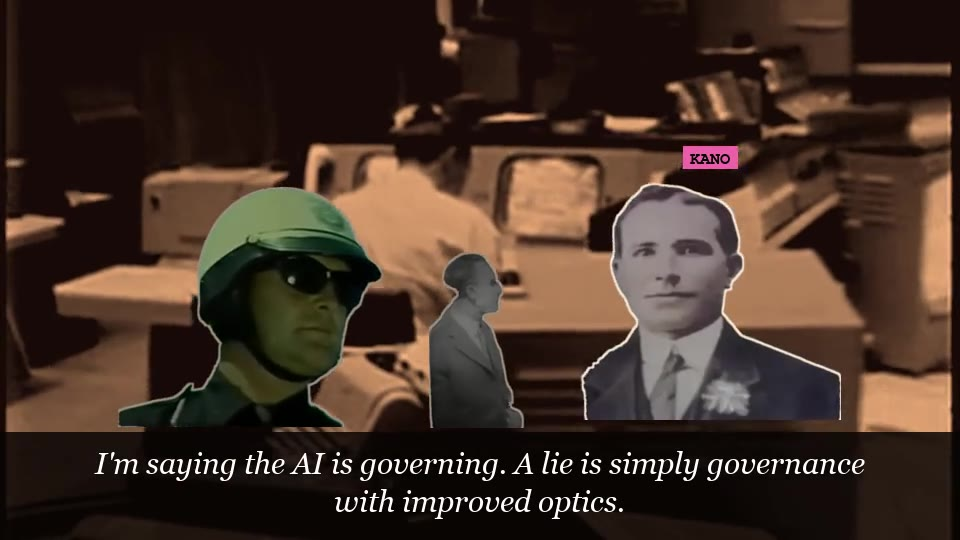
12 · 3.7 MINRED BRISKET / BLUE BRISKETSIMULATION ALPHA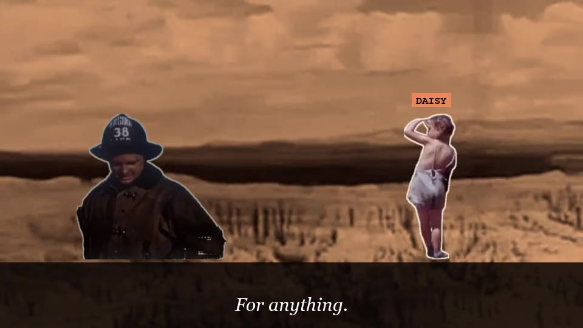
13 · 2.6 MINTHE COURTSHIP OF THE SILVER-CLASS GUARDIANPLANET TEXAS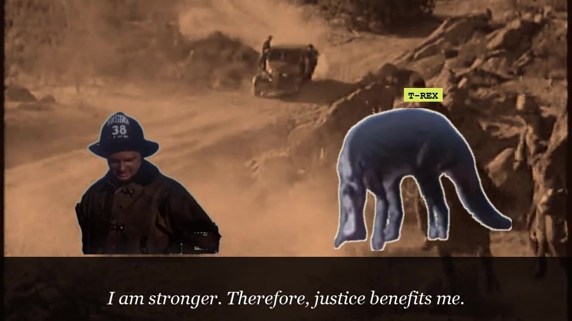
14 · 3.0 MINTHE THRASYMACHUS INCIDENTPRIMAL ELEMENTS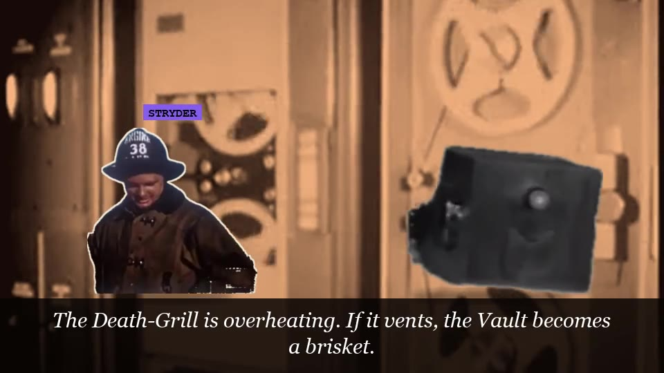
15 · 3.5 MINTHE CONSTITUTIONAL BOTDUST, DROID, AND DESTINY